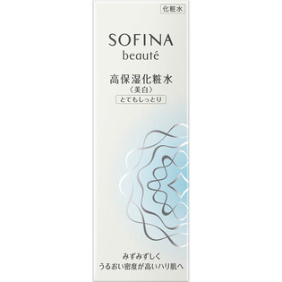

返回列表
产品名称：ソフィーナボーテ 高保湿化粧水美白 とてもしっとり

花王 ソフィーナボーテ 高保湿化粧水美白 とてもしっとり １４０ＭＬ（医薬部外品）
メーカー 花王
JANコード 4901301325174
商品の特徴
朝夜使用で約２．５ヶ月分
- 成分・分量
- L-アスコルビン酸2-グルコシド＊、水、グリセリン、BG、DPG、PEG1540、POEメチルグルコシド、アスナロ抽出液、チューベロースポリサッカライド液、水溶性ショウキョウエキス（K）、ユーカリエキス、N-アミジノ-L-プロリン、コハク酸2-（2-ヒドロキシエトキシ）エチルグアニジン、ベタイン、D-マンニット、キサンタンガム、POE・ジメチコン共重合体、POEイソセチルエーテル、リン酸1Na、リン酸2Na、水酸化K、無水エタノール、エタノール、フェノキシエタノール、エデト酸塩、香料＊は「有効成分」無表示は「その他の成分」
- 用法及び用量
- ＜使用方法＞
適量（直径2．5cmの円に広がるくらい）をやさしく顔全体になじませます。